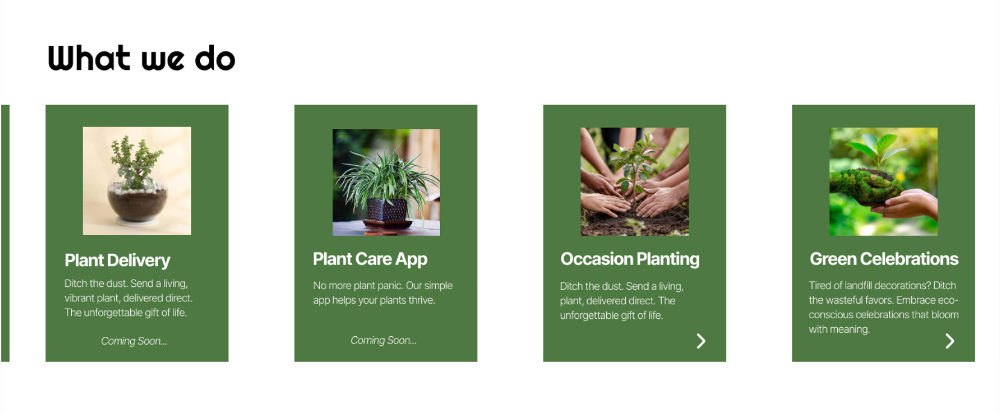
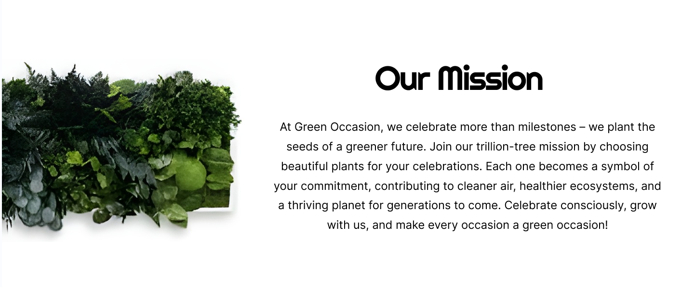
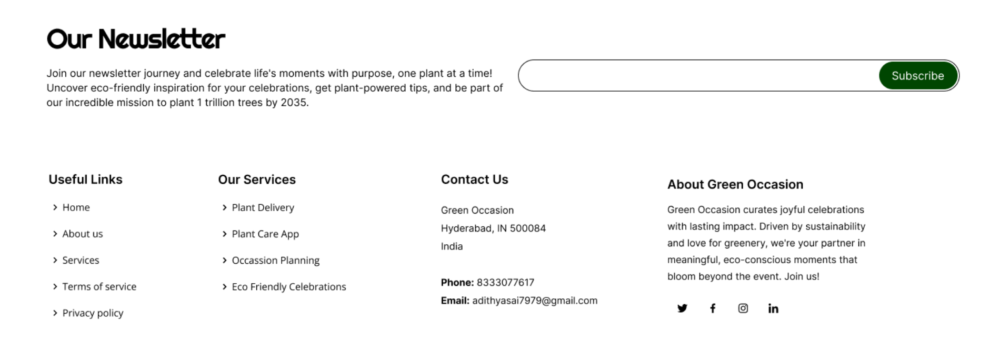
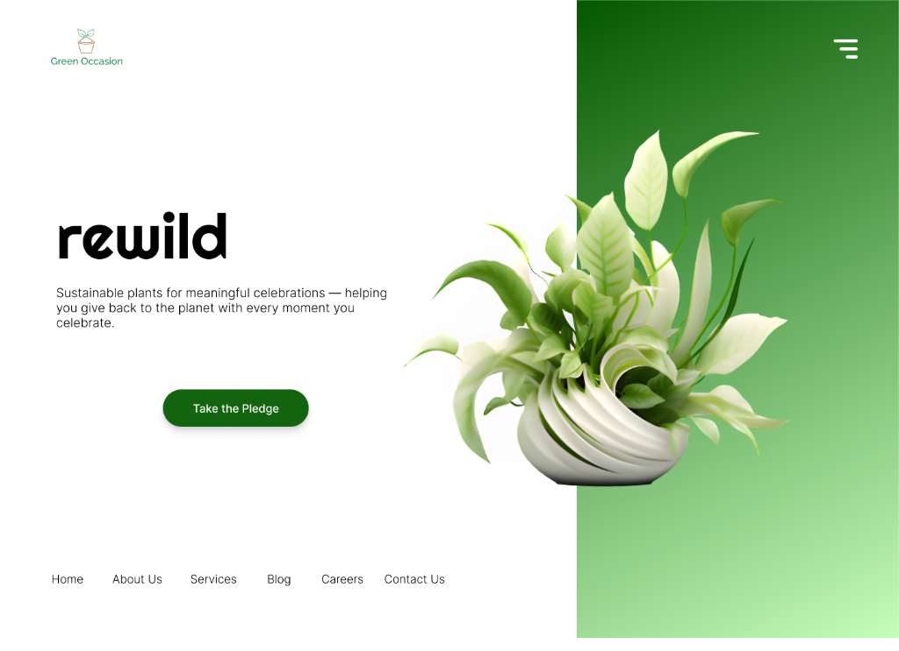

Green Occasion
Sustainable Celebration Platform
Designing a modern eco-conscious experience that transforms celebrations into meaningful, planet-positive moments.
Sustainable Celebration Platform
Designing a modern eco-conscious experience that transforms celebrations into meaningful, planet-positive moments.
Green Occasion is a sustainability-driven platform that enables people to celebrate life moments through living plants instead of disposable decor or cut flowers.
The redesign focused on transforming the brand from an informational eco website into a premium, modern, and emotionally engaging celebration experience.
The goal was to communicate environmental impact while maintaining warmth, trust, and gifting appeal.
Elevate the perception of sustainable gifting through refined visuals and modern layout.
Simplify offerings like plant delivery, celebration planting, and green events into structured modules.
Position plants as meaningful celebration symbols rather than products.

Services were reorganized into a modular card structure to improve clarity and scanning. Each offering is presented as a distinct celebration pathway, reinforcing the platform's eco-friendly mission.
Services include: Plant Delivery · Plant Care App · Occasion Planting · Green Celebrations

The mission section was redesigned to create emotional resonance and visual balance.
Organic plant imagery anchors the message while typography hierarchy improves readability and impact.
The layout emphasizes Green Occasion's core promise — celebrating life while restoring nature.

The redesign introduces a botanical-premium visual system built on:
This creates a calm, trustworthy, and eco-luxury brand tone.
A modern sustainable celebration platform that communicates ecological impact through warmth, clarity, and botanical elegance.
